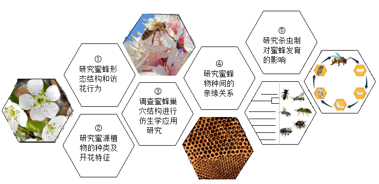

2023年北京中考生物 第32题 解析
32. 阅读科普短文，回答问题。
提到蜜蜂，人们往往想到的是香甜的蜂蜜、六边形的巢穴和穿梭于花丛间的忙碌“身影”。在自然界中蜜蜂不仅是酿造者、建筑师，更是传粉“使者”，需要传粉的植物中有90%都依赖于蜜蜂传粉。
近年来研究发现，蜜蜂的物种多样性大幅度下降。引起蜜蜂种类和数量减少的因素是复杂多样的，如气候变化使一些植物提前开花，而蜜蜂的生物钟不能尽快适应，导致采蜜时间和蜜源植物花期不一致；农业生产中杀虫剂的使用不当可能会直接杀死蜜蜂，也会影响蜜蜂卵和幼虫的发育，降低蛹的羽化率；土地用途的改变导致蜜蜂栖息地减少；外来蜂种的引进可提高作物产量，但会争夺本土蜜蜂的蜜粉源。
为解决这些问题，我国科研人员从不同方面开展了大量研究（如图），成果可观。

除了专业研究之外，不同社会角色都应关注蜜蜂等传粉昆虫的保护工作，这对于粮食安全和农业可持续发展具有重要意义、每年5月20日是“世界蜜蜂日”，今年的主题是“‘蜜’切参与——发展农业生产，保护传粉昆虫”，以此来呼吁人们积极参与，为保护蜜蜂等传粉昆虫做贡献，共同构建“蜜蜂友好型”社会。
（1）研究蜜蜂需要先了解它。蜜蜂的身体和附肢分节，属于______动物门昆虫纲，发育类型为______发育。蜜蜂传粉有助于实现同种植物间的______（填“自花”或“异花”）传粉，提高后代的变异性，促进农业提质增产。
（2）外来蜂种和本地蜂种间存在______关系，在引进外来蜂种时需要考虑生态安全。
（3）为解决“引起蜜蜂生物钟与蜜源植物花期不一致”的问题，可以从图中所示的______（填序号，多选）方面进行研究。
（4）不同社会角色都应“蜜”切参与到保护蜜蜂的行动中，作为一名中学生，你可以做的是：______（写出一条即可）。
【答案】（1） ①. 节肢
②. 完全变态 ③. 异花 （2）竞争 （3）①②
（4）不破坏花草、不破坏蜂巢
【解析】
【分析】蜜蜂属于节肢动物，发育过程包括：受精卵→幼虫→蛹→成虫四个时期，为完全变态发育。
【小问1详解】
蜜蜂的身体和附肢分节，属于节肢动物门昆虫纲，蜜蜂的发育过程包括：受精卵→幼虫→蛹→成虫四个时期，为完全变态发育。蜜蜂在花朵间传粉有助于实现同种植物间的异花传粉，提高后代的变异性，促进农业提质增产。
 小问2详解】
小问2详解】
由资料可知，外来蜂种和本地蜂种间争夺蜜粉源，属于竞争关系。
【小问3详解】
由资料可知，气候变化使一些植物提前开花，而蜜蜂的生物钟不能尽快适应，导致采蜜时间和蜜源植物花期不一致。为解决“引起蜜蜂生物钟与蜜源植物花期不一致”的问题，可以从图中所示的①研究蜜蜂形态结构和访花行为、②研究蜜源植物的种类及开花特征方面进行研究。
【小问4详解】
可以通过不破坏花草、不破坏蜂巢等方式为保护蜜蜂尽自己的一份力。